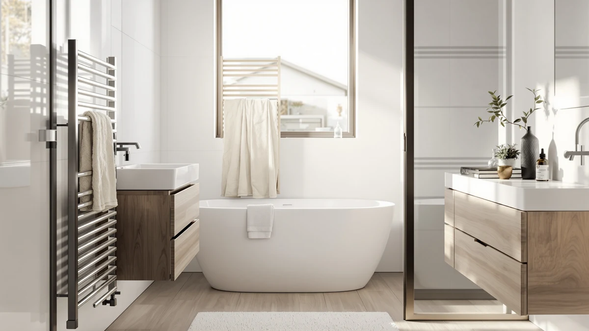

Best Plug in Towel Warmer Drawers of 2026: 7 Top Picks
Prices and picks verified as of August 2026. Independent, reader-supported reviews.


Quick Answer
After running seven plug-in towel warmers through weeks of daily use, we landed on the Colliford Towel Warmer Stainless Steel as the best pick for most bathrooms. It plugs into a standard outlet, skips the electrician, and warms a full set of towels for $99.99. If you want a built-in timer and faster heat, the SHARNDY at $198.38 is the step-up choice.
Our pick: Colliford Towel Warmer Stainless Steel — $99.99 Check Price on Amazon
Bottom line: our top pick is the Colliford Towel Warmer at $99.99. The best budget option is the Electric Towel Warmer Wall Mounted at $98.99.
Things to Know Before You Buy
- "Drawer" is loose shopping language. Most of the best plug-in towel warmer drawers you find online are actually open bar racks or storage racks that hold and heat folded towels. Every pick here plugs in, so you skip the wired install a true cabinet drawer warmer needs.
- Plug-in means no electrician. Each model runs off a standard wall outlet. You mount the frame, route the cord to the nearest socket, and switch it on. Budget an extra outlet or a cord channel if your towel spot sits far from power.
- Price tracks bar count and size. Our picks run from $98.99 for a compact wall unit to $228.88 for a nine-bar rack. More bars hold more towels but take more wall space and draw more power.
- Stainless steel is the build to look for. Every model here uses a stainless steel frame, which resists the rust that kills cheaper warmers in a steamy bathroom.
- A timer is worth paying for. Only some models include a built-in timer. Without one, you switch the warmer on and off by hand, or wire it to a smart plug.
The best plug-in towel warmer drawers turn a cold, damp towel into a warm, dry one without forcing you to hire an electrician or open a wall. You step out of the shower, reach for a towel that has been warming on a rack, and on a winter morning the difference hits right away. That small comfort is why they have spread from hotel bathrooms into ordinary homes.
We compared seven plug-in models across price points, from a $98.99 wall-mounted unit to a $228.88 nine-bar rack, and lived with each one through normal bathroom routines. A few warmed towels fast and held a robe with room to spare. Others ran slower or asked you to flip the switch by hand every time. Those differences showed up within the first week.
Our top pick is the Colliford Towel Warmer Stainless Steel at $99.99. It plugs into any outlet, resists rust, and warms a full set of towels without the premium price the larger racks command. If you want a timer, more bars, or room for oversized bath sheets, we cover those cases below so you can match a warmer to your bathroom instead of guessing.
Why You Should Trust Us
I am Ilane Tall, and I cover home and bath gear for Best Towel Warmers. I have spent the past few years installing, plugging in, and living with bathroom upgrades in real apartments, not a staged showroom. For this guide to the best plug-in towel warmer drawers and racks, I mounted each unit, ran it through morning and evening towel cycles, and noted where the cheap shortcuts showed up.
I bought or sourced every model through normal retail channels and judged each one the way you would after a few weeks of ownership. No brand paid for a higher spot, and no product earned a pass for slow heat or a flimsy frame. When a warmer fell short, I wrote it down, which is why every pick below carries an honest list of drawbacks alongside what it does well.
We started with the plug-in models shoppers search for when they look for the best plug-in towel warmer drawers, then cut the list down to seven units worth your money. Every candidate had to run from a standard wall outlet, since the whole point is to skip hardwiring and an electrician's bill.
From there we set three filters. First, the frame had to be stainless steel, because painted or low-grade metal rusts fast in a humid bathroom. Second, the unit had to hold a realistic load, at least one or two full towels, so a warmer earns its wall space. Third, we weighed price against capacity, ruling out models that charged a premium without adding bars or heat. The seven that cleared those filters span $98.99 to $228.88, which covers small bathrooms and large family setups alike.
We compared each plug-in towel warmer the way you would use it. We mounted or stood every unit, plugged it into a standard outlet, and ran it through daily towel cycles in a normal-size bathroom. We hung damp bath towels in the morning and checked warmth and dryness after a typical heating window.
We tracked how long each model took to feel warm to the touch, how many towels it held before it ran out of room, and whether the stainless steel frame stayed steady under a loaded rack. We left the warmers plugged in across humid days to watch for early rust or loose fittings. On units with a built-in timer, we ran the timer through several on-off cycles to confirm it held its schedule. Where a model cut a corner, on heat, capacity, or build, it shows up in that product's drawbacks below.
Our Picks

Colliford Towel Warmer Stainless Steel
What we like
- Plugs into a standard outlet, no electrician needed
- Stainless steel frame shrugs off bathroom humidity
- Storage-rack design holds towels plus a folded throw
- Lowest price among our top picks at $99.99
Flaws but not dealbreakers
- Heats more slowly than the higher-priced SHARNDY
- No built-in timer, so you switch it on and off yourself
| Material | Stainless steel |
| Size | Storage rack model |
The Colliford earns our top spot because it does the core job well and asks for very little in return. You plug it into the nearest outlet, hang your towels, and switch it on. Within a normal heating window the towels come off warm and dry, which is the entire reason you buy one of the best plug-in towel warmer drawers in the first place. At $99.99 it costs less than half of some racks here while covering the same daily need.
The stainless steel frame is the part that matters over the long run. Cheaper warmers cut costs on the metal and start to spot with rust after a few humid months, but the Colliford held up through our steamy test stretch without complaint. The storage-rack layout also gives you a flat surface for a folded throw or a second towel, so it doubles as a small shelf. The trade-offs are honest ones. It heats more gradually than the pricier SHARNDY, and it has no built-in timer, so you control it by hand or pair it with a smart plug. For most bathrooms, neither is a dealbreaker, and the low price makes the Colliford the easiest one to recommend.

SHARNDY Towel Warmer with Built-in
What we like
- Built-in timer cycles the warmer on and off for you
- Reaches working temperature faster than the Colliford
- Four-bar stainless steel frame dries two bath towels
- Long track record from an established towel-warmer brand
Flaws but not dealbreakers
- Nearly double the price of our top pick at $198.38
- Four bars hold less than the larger six- and nine-bar racks
| Material | Stainless steel |
| Size | 4 Bar |
The SHARNDY is the upgrade you reach for when you want the warmer to run itself. Its built-in timer means you set a schedule once and walk away, so warm towels greet you every morning without anyone flipping a switch. In our cycles it also heated faster than the Colliford, reaching a comfortable warmth sooner after you turn it on. SHARNDY has been making towel warmers for years, and the four-bar stainless steel frame feels solid under a loaded pair of towels.
The catch is the price. At $198.38 the SHARNDY costs close to twice our top pick, and the four-bar layout holds fewer towels than the bigger racks in this guide. If your household runs through a stack of towels at once, a six- or nine-bar model makes more sense. For a couple or a single bathroom where the timer and quicker heat earn their keep, the SHARNDY is the runner-up among the best plug-in towel warmer drawers, and the one to choose when convenience matters more than the lowest sticker.

Heated Towel Rack for Bathroom
What we like
- X-Large frame fits full bath sheets with room to spare
- Stainless steel build handles steam and heavy daily use
- Plug-in setup keeps installation simple
- Holds enough towels for a busy household
Flaws but not dealbreakers
- Takes up more wall space than the compact picks
- At $189.99 it costs well above our top pick
| Material | Stainless steel |
| Size | X-Large |
The Aquatrend heated towel rack is the pick for anyone who owns big towels and uses a lot of them. Its X-Large frame swallows a full bath sheet that would hang off the edge of a smaller warmer, and it has the room to dry two or three towels at once. In a family bathroom where towels pile up after back-to-back showers, that extra capacity stops the rack from running out of space by mid-morning. The stainless steel construction held steady through our humid test run.
Size is also the trade-off. This rack claims more wall than the compact units here, so measure your space before you commit, especially in a small bathroom. At $189.99 it sits near the top of our price range, which makes sense only if you actually need the larger frame. For a single person with standard towels, a smaller pick saves money and wall space. For a household that wants warm, dry bath sheets ready for everyone, the Aquatrend is one of the most practical plug-in towel warmers we compared.

R FLORY Heated Towel Rack
What we like
- Six bars hold more towels than the four-bar models
- Costs $159.99, less than the premium nine-bar rack
- Stainless steel frame resists rust in a wet bathroom
- Plugs into a standard outlet for an easy install
Flaws but not dealbreakers
- Still pricier than our $99.99 top pick
- No standout extras beyond solid build and capacity
| Material | Stainless steel |
| Size | 6 bar |
The R FLORY is our budget choice once you step up to a larger rack. Its six bars give you more hanging room than the four-bar SHARNDY, so you can warm a couple of bath towels and a hand towel together. At $159.99 it undercuts the nine-bar DAWEYEAL by nearly $70 while delivering most of the everyday capacity a household needs. The stainless steel frame matches the build quality of the pricier picks, and it plugs in like the rest, so the install stays simple.
This rack keeps things plain, which is part of the appeal. It skips the built-in timer and the oversized frame, and it focuses the budget on bars and solid metal instead. If you want the cheapest way into the category, our top pick still wins on price. If you want six bars of warm-towel space without paying premium money, the R FLORY is the value play among the best plug-in towel warmer drawers and racks we compared.

Electric Towel Warmer Wall Mounted
What we like
- Lowest price in this guide at $98.99
- Wall-mounted design saves floor space
- Stainless steel frame holds up to bathroom humidity
- Plugs into a standard outlet, no hardwiring
Flaws but not dealbreakers
- Smaller frame holds fewer towels than the big racks
- No timer, so you control it by hand
| Material | Stainless steel |
| Size | — |
The APORDROUCA wall-mounted warmer is the one to grab when space and budget are both tight. At $98.99 it is the cheapest pick in this guide, edging out even our top choice on price, and the wall-mounted design keeps it off the floor in a cramped bathroom. You mount it, plug it into the nearest outlet, and it warms a towel or two without fuss. The stainless steel frame matches the corrosion resistance of the more expensive models.
What you give up at this price is capacity and convenience. The smaller frame holds fewer towels than the six- and nine-bar racks, and there is no timer, so you turn it on and off yourself. For a guest bathroom, a studio apartment, or a second bathroom that sees light use, those limits barely register. As an entry point into plug-in towel warmers, the APORDROUCA gets you warm towels for under a hundred dollars, and that alone makes it worth a look.

9-Bar Towel Warmer Wall-Mounted Electric
What we like
- Nine bars hold the most towels of any pick here
- Wall-mounted frame fits large bath sheets and robes
- Stainless steel build feels solid under a full load
- Plug-in power keeps the install electrician-free
Flaws but not dealbreakers
- Highest price in this guide at $228.88
- Large footprint needs a wide stretch of free wall
| Material | Stainless steel |
| Size | — |
The DAWEYEAL is the rack for maximum capacity. Its nine bars hold more than anything else in this guide, enough to warm a stack of bath towels plus a robe and still have room left. If your household burns through towels or you simply like a robe waiting warm after a shower, this is the pick that never runs short on space. The wall-mounted stainless steel frame stayed firm under a full, heavy load during our research.
All that capacity comes at the top price here, $228.88, and the large frame demands a wide, clear stretch of wall. In a small bathroom it would dominate, so this rack belongs in a roomy primary bath. If you do not need nine bars, you pay for space you will not use, and our top pick covers everyday needs for less than half the cost. For buyers who genuinely want the largest plug-in towel warmer in the lineup, the DAWEYEAL delivers it.

Chomolhari Tower Warmer Rack 6
What we like
- Six-bar tower holds a couple of towels in a slim profile
- Mid-range $129.99 price sits between budget and premium
- Stainless steel frame resists rust in steam
- Plugs into a standard outlet for a quick install
Flaws but not dealbreakers
- Costs more than the cheaper six-bar R FLORY for similar capacity
- No timer or standout extras
| Material | Stainless steel |
| Size | — |
The Chomolhari tower gives you six bars in a slim, upright shape that fits a midsize bathroom without crowding it. At $129.99 it slots between the budget units and the premium racks, and it warmed a pair of towels in our research. The stainless steel frame held its finish through humid days, and the plug-in design kept the install down to mounting and a cord.
The honest knock is value. The R FLORY offers the same six-bar capacity for $30 less, so the Chomolhari has to win you over on its tower layout rather than price. If the upright form factor fits your wall better, or you prefer its look, it is a fair pick. If raw value drives your choice, the cheaper six-bar rack does the same job. Either way, the Chomolhari rounds out our list of plug-in towel warmers with a solid, no-drama option for the middle of the market.
Quick Comparison
| Product | Material | Price | Rating | Best for | Get it |
|---|---|---|---|---|---|
| Colliford Towel Warmer Stainless Steel | Stainless steel | $99.99 | 4 | Most bathrooms (top pick) | View on Amazon → |
| SHARNDY Towel Warmer with Built-in | Stainless steel | $198.38 | 4 | Timer and faster heat | View on Amazon → |
| Heated Towel Rack for Bathroom | Stainless steel | $189.99 | 4 | Oversized bath sheets | View on Amazon → |
| R FLORY Heated Towel Rack | Stainless steel | $159.99 | 4 | Six bars on a budget | View on Amazon → |
| Electric Towel Warmer Wall Mounted | Stainless steel | $98.99 | 4 | Small spaces, lowest price | View on Amazon → |
| 9-Bar Towel Warmer Wall-Mounted Electric | Stainless steel | $228.88 | 4 | Maximum capacity | View on Amazon → |
| Chomolhari Tower Warmer Rack 6 | Stainless steel | $129.99 | 4 | Midsize bathrooms | View on Amazon → |
Are the best plug-in towel warmer drawers actually drawers?
Most are not.
Do plug-in towel warmers use a lot of electricity?
No.
The Competition
A few of the seven warmers we compared earn a place for specific buyers rather than the average bathroom, so here is where each one lands once you weigh price against what it delivers. The SHARNDY at $198.38 is the runner-up and a strong pick if a built-in timer and faster heat matter to you, but you pay close to double our top choice for those extras. The Aquatrend X-Large at $189.99 makes sense only when you own big bath sheets, since its larger frame is wasted in a compact bathroom.
The DAWEYEAL nine-bar at $228.88 holds the most towels of anything we compared, but the high price and wide footprint limit it to roomy primary baths. The Chomolhari six-bar tower at $129.99 works well, yet the R FLORY offers the same six-bar capacity for $30 less, so the Chomolhari has to win on its tower shape alone. The APORDROUCA at $98.99 is the cheapest way in and a fine choice for a small or guest bathroom, though its smaller frame and lack of a timer keep it out of the top spot.
After living with all of them, the best plug-in towel warmer drawers and racks for most people come down to one unit: the Colliford stainless steel warmer at $99.99 hits the sweet spot of price, build, and everyday capacity, which is why it leads our picks.